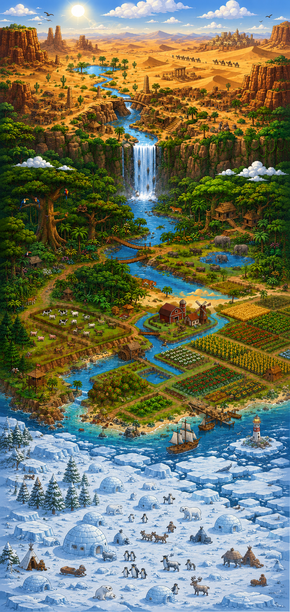

One penguin. Three worlds. One journey home.
Can you make it back to the Arctic?
Help our penguin make his way home to the Arctic. Travel through scorching deserts, dense jungles and dangerous farms while avoiding obstacles, collecting ice cubes and escaping the cowboy who stole his home.
Hover (or tap) the glowing markers below to learn about each stop on the penguin's journey home.

Travel through three increasingly dangerous environments. The further you go, the harder it gets.
Gather ice cubes along the way. You need your house back — and they boost your score.
Navigate through desert, jungle and farm to reach the Arctic and finally get back home.
Three levels. Three worlds. Can you guide the penguin all the way back home?